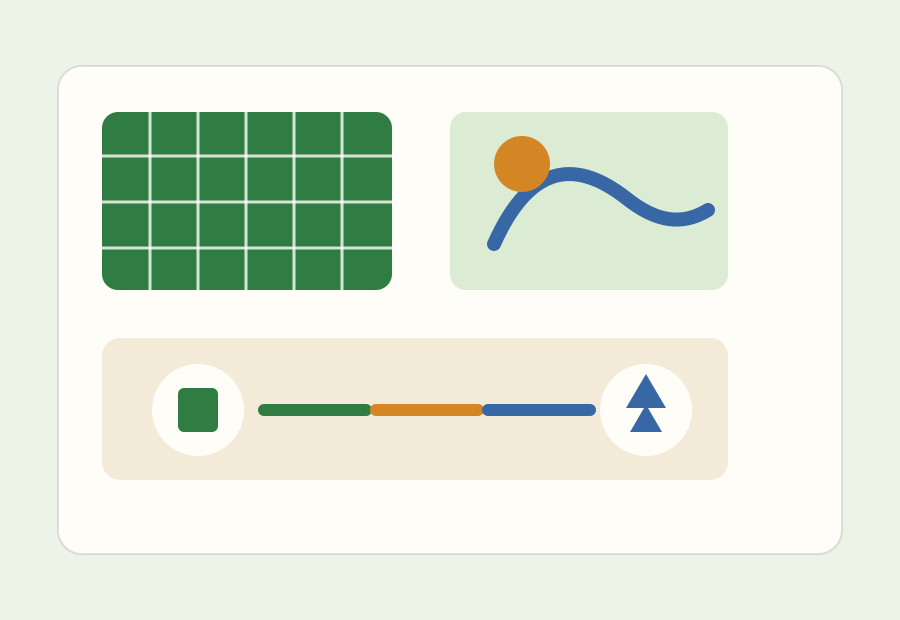

Portfolio-Blick
Mehrere Anlagen werden nach Ertrag, Risiko und Wartungsbedarf priorisiert.
Energy Intelligence
Terra Grid zeigt Verbrauch, Ertrag und Speicherstatus fuer Immobilienportfolios in einer klaren Betriebsansicht.

System
Die Seite spricht Entscheider und Betreiber an: messbare Wirkung, klare Daten und eine direkte Analyse-Einladung.
Mehrere Anlagen werden nach Ertrag, Risiko und Wartungsbedarf priorisiert.
Verbrauchsspitzen und Ladefenster werden als Handlungsempfehlungen sichtbar.
Management-Reports zeigen Einsparung, CO2 und technische Verfuegbarkeit.
"Endlich sehen wir nicht nur Ertrag, sondern auch die Entscheidungen dahinter."
Asset Manager, Real EstateAnalyse
Der CTA bietet einen klaren B2B-Einstieg: Analyse statt generischer Kontaktaufnahme.